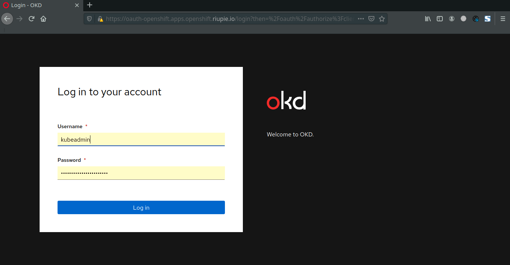

Environment

| IP Address | Hostname | OS | Description |
|---|---|---|---|
| 10.10.51.9 | okd-bastion | CentOS 8 | DNS Server, DHCP Server, NTP Server, PXE Server, LDAP Server |
| 10.10.51.10 | okd-bootstrap | Fedora COreOS | Bootstrap Server. Temporary only, could be delete after bootstrapping done. |
| 10.10.51.11 | okd-master01 | Fedora CoreOS | Master |
| 10.10.51.12 | okd-master02 | Fedora CoreOS | Master |
| 10.10.51.13 | okd-master03 | Fedora CoreOS | Master |
| 10.10.51.21 | okd-worker01 | Fedora CoreOS | Worker |
| 10.10.51.22 | okd-worker02 | Fedora CoreOS | Worker | 10.10.51.31 | okd-lb1 | CentOS 8 | Load Balancer | 10.10.51.32 | okd-lb2 | CentOS 8 | Load Balancer |
Part 1: Bastion/Helper Server
1. Setup DNS Server
1.1. Install Bind Packages
yum install -y vim bind bind-utils
1.2. Define Zone in the end of file
vim /etc/named.conf
options {
directory "/var/named";
dump-file "/var/named/data/cache_dump.db";
statistics-file "/var/named/data/named_stats.txt";
memstatistics-file "/var/named/data/named_mem_stats.txt";
secroots-file "/var/named/data/named.secroots";
recursing-file "/var/named/data/named.recursing";
allow-query { localhost;10.10.51.0/24; };
listen-on port 53 { any; };
recursion yes;
forwarders {
8.8.8.8;
8.8.4.4;
};
dnssec-enable yes;
dnssec-validation yes;
managed-keys-directory "/var/named/dynamic";
pid-file "/run/named/named.pid";
session-keyfile "/run/named/session.key";
/* https://fedoraproject.org/wiki/Changes/CryptoPolicy */
include "/etc/crypto-policies/back-ends/bind.config";
};
logging {
channel default_debug {
file "data/named.run";
severity dynamic;
};
};
zone "." IN {
type hint;
file "named.ca";
};
zone "openshift.riupie.io" {
type master;
file "dynamic/forward.db";
};
zone "51.10.10.in-addr.arpa" {
type master;
file "dynamic/reverse.db";
};
include "/etc/named.rfc1912.zones";
include "/etc/named.root.key";
1.3. Create zone files
vim /var/named/dynamic/forward.db
$TTL 1W
@ IN SOA ns1.openshift.riupie.io. root (
2020092301 ; serial
3H ; refresh (3 hours)
30M ; retry (30 minutes)
2W ; expiry (2 weeks)
1W ) ; minimum (1 week)
IN NS ns1.openshift.riupie.io.
IN MX 10 smtp.openshift.riupie.io.
;
;
ns1 IN A 10.10.51.9
smtp IN A 10.10.51.9
;
bastion IN A 10.10.51.9
;
; The api points to the IP of your load balancer
api IN A 10.10.51.100
api-int IN A 10.10.51.100
;
; The wildcard also points to the load balancer
*.apps IN A 10.10.51.100
;
; Create entry for the bootstrap host
bootstrap IN A 10.10.51.10
;
; Create entries for the master hosts
master01 IN A 10.10.51.11
master02 IN A 10.10.51.12
master03 IN A 10.10.51.13
;
; Create entries for the worker hosts
worker01 IN A 10.10.51.21
worker02 IN A 10.10.51.22
;
; The ETCd cluster lives on the masters...so point these to the IP of the masters
etcd-0 IN A 10.10.51.11
etcd-1 IN A 10.10.51.12
etcd-2 IN A 10.10.51.13
;
; The SRV records are IMPORTANT....make sure you get these right...note the trailing dot at the end...
_etcd-server-ssl._tcp IN SRV 0 10 2380 etcd-0.openshift.riupie.io.
_etcd-server-ssl._tcp IN SRV 0 10 2380 etcd-1.openshift.riupie.io.
_etcd-server-ssl._tcp IN SRV 0 10 2380 etcd-2.openshift.riupie.io.
;
1.4. Create Reverse Zone File
vim /var/named/dynamic/reverse.db
$TTL 1W
@ IN SOA ns1.openshift.riupie.io. root (
2020092301 ; serial
3H ; refresh (3 hours)
30M ; retry (30 minutes)
2W ; expiry (2 weeks)
1W ) ; minimum (1 week)
IN NS ns1.openshift.riupie.io.
;
; syntax is "last octet" and the host must have fqdn with trailing dot
9 IN PTR bastion.openshift.riupie.io.
11 IN PTR master01.openshift.riupie.io.
12 IN PTR master02.openshift.riupie.io.
13 IN PTR master03.openshift.riupie.io.
;
10 IN PTR bootstrap.openshift.riupie.io.
;
100 IN PTR api.openshift.riupie.io.
100 IN PTR api-int.openshift.riupie.io.
;
21 IN PTR worker01.openshift.riupie.io.
22 IN PTR worker02.openshift.riupie.io.
;
1.5. Enable and start bind service
systemctl enable named
systemctl restart named
systemctl status named
1.6. Allow firewall
firewall-cmd --permanent --add-service=dns --zone=public --permanent
firewall-cmd --reload
1.7. Change DNS Server on Bastion
#Change DNS Server
nmtui
#Restart interface
ifdown ens3;ifup en3
1.8. Verify DNS Server works
nslookup api.openshift.riupie.io
2. Setup DHCP Server
2.1. Install dhcp-server package
yum install dhcp-server -y
2.2. Configure DHCP Leases
vim /etc/dhcp/dhcpd.conf
ddns-update-style interim;
ignore client-updates;
authoritative;
allow booting;
allow bootp;
allow unknown-clients;
# internal subnet for my DHCP Server
subnet 10.10.51.0 netmask 255.255.255.0 {
range 10.10.51.200 10.10.51.210;
option domain-name-servers 10.10.51.9;
option routers 10.10.51.1;
option broadcast-address 10.10.51.255;
default-lease-time 600;
max-lease-time 7200;
host bootstrap.openshift.riupie.io { hardware ethernet 52:54:00:19:24:45; fixed-address 10.10.51.10; }
host master01.openshift.riupie.io { hardware ethernet 52:54:00:63:9b:49; fixed-address 10.10.51.11; }
host master02.openshift.riupie.io { hardware ethernet 52:54:00:06:2c:9b; fixed-address 10.10.51.12; }
host master03.openshift.riupie.io { hardware ethernet 52:54:00:93:87:91; fixed-address 10.10.51.13; }
host worker01.openshift.riupie.io { hardware ethernet 52:54:00:10:d4:f3; fixed-address 10.10.51.21; }
host worker02.openshift.riupie.io { hardware ethernet 52:54:00:18:59:d2; fixed-address 10.10.51.22; }
deny unknown-clients;
# IP of PXE Server
next-server 10.10.51.9;
if exists user-class and option user-class = "iPXE" {
filename "http://bastion.openshift.riupie.io:8080/boot.ipxe";
} else {
filename "undionly.kpxe";
}
}
2.3. Restart and enable dhcp service
systemctl enable dhcpd
systemctl restart dhcpd
systemctl status dhcpd
2.4. Set firewall
sudo firewall-cmd --add-service=dhcp --permanent
sudo firewall-cmd --reload
3. Setup PXE Boot Server
3.1. Install tftp-server package
yum install tftp-server ipxe-bootimgs -y
ln -s /usr/share/ipxe/undionly.kpxe /var/lib/tftpboot
3.2. Download and Extract Matchbox
curl -LO https://github.com/poseidon/matchbox/releases/download/v0.8.3/matchbox-v0.8.3-linux-amd64.tar.gz
tar xvzf matchbox-v0.8.3-linux-amd64.tar.gz
3.3. Move matchbox binary
cd matchbox-v0.8.3-linux-amd64
cp matchbox /usr/local/bin/
3.4. Create matchbox user for matchbox service
useradd -U matchbox
3.5. Create configuration directory for matchbox
mkdir -p /var/lib/matchbox/{assets,groups,ignition,profiles}
chown -R matchbox:matchbox /var/lib/matchbox
3.6. Start and enable TFTP Service
systemctl enable tftp
systemctl restart tftp
3.7. Set firewalld for TFTP
firewall-cmd --permanent --add-service=tftp
firewall-cmd --reload
3.8. Create, enable and start matchbox systemd service
cp contrib/systemd/matchbox-local.service /etc/systemd/system/matchbox.service
systemctl daemon-reload
systemctl enable matchbox
systemctl restart matchbox
3.9. Download Fedora CoreOS assets
cd /var/lib/matchbox/assets
wget https://builds.coreos.fedoraproject.org/prod/streams/stable/builds/32.20200907.3.0/x86_64/fedora-coreos-32.20200907.3.0-live-kernel-x86_64 -O fcos-32-kernel
wget https://builds.coreos.fedoraproject.org/prod/streams/stable/builds/32.20200907.3.0/x86_64/fedora-coreos-32.20200907.3.0-live-kernel-x86_64.sig -O fcos-32-kernel.sig
wget https://builds.coreos.fedoraproject.org/prod/streams/stable/builds/32.20200907.3.0/x86_64/fedora-coreos-32.20200907.3.0-live-initramfs.x86_64.img -O fcos-32-initramfs.img
wget https://builds.coreos.fedoraproject.org/prod/streams/stable/builds/32.20200907.3.0/x86_64/fedora-coreos-32.20200907.3.0-live-initramfs.x86_64.img.sig -O fcos-32-initramfs.img.sig
wget https://builds.coreos.fedoraproject.org/prod/streams/stable/builds/32.20200907.3.0/x86_64/fedora-coreos-32.20200907.3.0-metal.x86_64.raw.xz -O fcos-32-metal.raw.xz
wget https://builds.coreos.fedoraproject.org/prod/streams/stable/builds/32.20200907.3.0/x86_64/fedora-coreos-32.20200907.3.0-metal.x86_64.raw.xz.sig -O fcos-32-metal.raw.xz.sig
3.10. Create matchbox profile for bootstrap, master and worker nodes
vim /var/lib/matchbox/profiles/bootstrap.json
{
"id": "bootstrap",
"name": "OKD 4.5 - Bootstrap",
"ignition_id": "bootstrap.ign",
"boot": {
"kernel": "/assets/fcos-32-kernel",
"initrd": ["/assets/fcos-32-initramfs.img"],
"args": [
"ip=dhcp",
"rd.neednet=1",
"console=tty0",
"console=ttyS0",
"coreos.inst=yes",
"coreos.inst.install_dev=vda",
"coreos.inst.image_url=http://helper.openshift.riupie.io:8080/assets/fcos-32-metal.raw.xz",
"coreos.inst.ignition_url=http://helper.openshift.riupie.io:8080/ignition?mac=${mac:hexhyp}"
]
}
}
vim /var/lib/matchbox/profiles/master.json
{
"id": "master",
"name": "OKD 4.5 - Master",
"ignition_id": "master.ign",
"boot": {
"kernel": "/assets/fcos-32-kernel",
"initrd": ["/assets/fcos-32-initramfs.img"],
"args": [
"ip=dhcp",
"rd.neednet=1",
"console=tty0",
"console=ttyS0",
"coreos.inst=yes",
"coreos.inst.install_dev=vda",
"coreos.inst.image_url=http://helper.openshift.riupie.io:8080/assets/fcos-32-metal.raw.xz",
"coreos.inst.ignition_url=http://helper.openshift.riupie.io:8080/ignition?mac=${mac:hexhyp}"
]
}
}
vim /var/lib/matchbox/profiles/worker.json
{
"id": "worker",
"name": "OKD 4.5 - Worker",
"ignition_id": "worker.ign",
"boot": {
"kernel": "/assets/fcos-32-kernel",
"initrd": [
"/assets/fcos-32-initramfs.img"
],
"args": [
"ip=dhcp",
"rd.neednet=1",
"console=tty0",
"console=ttyS0",
"coreos.inst=yes",
"coreos.inst.install_dev=vda",
"coreos.inst.image_url=http://helper.openshift.riupie.io:8080/assets/fcos-32-metal.raw.xz",
"coreos.inst.ignition_url=http://helper.openshift.riupie.io:8080/ignition?mac=${mac:hexhyp}"
]
}
}
3.11. Create groups for each nodes (changes MAC ADDRESS)
vim /var/lib/matchbox/groups/bootstrap.json
{
"id": "bootstrap01",
"name": "OCP 4.5 - Bootstrap server",
"profile": "bootstrap",
"selector": {
"mac": "52:54:00:7a:55:a1"
}
}
vim /var/lib/matchbox/groups/master01.json
{
"id": "master01",
"name": "OCP 4.5 - Master 1",
"profile": "master",
"selector": {
"mac": "52:54:00:58:b0:a9"
}
}
vim /var/lib/matchbox/groups/master02.json
{
"id": "master02",
"name": "OCP 4.5 - Master 2",
"profile": "master",
"selector": {
"mac": "52:54:00:79:70:08"
}
}
vim /var/lib/matchbox/groups/master03.json
{
"id": "master03",
"name": "OCP 4.5 - Master 3",
"profile": "master",
"selector": {
"mac": "52:54:00:de:92:a2"
}
}
vim /var/lib/matchbox/groups/worker01.json
{
"id": "worker01",
"name": "OCP 4.5 - Worker 1",
"profile": "worker",
"selector": {
"mac": "52:54:00:6f:4b:1f"
}
}
vim /var/lib/matchbox/groups/worker02.json
{
"id": "worker02",
"name": "OCP 4.5 - Worker 2",
"profile": "worker",
"selector": {
"mac": "52:54:00:c7:f4:21"
}
}
3.12. Set permission for group and profile file
chown -R matchbox:matchbox /var/lib/matchbox
3.13. Set firewalld for matchbox
firewall-cmd --permanent --add-port 8080/tcp
firewall-cmd --reload
3.14. Restart matchbox
systemctl restart matchbox
4. Setup NTP Server
4.1. Install chrony package
yum install -y chrony
4.2. Configure chrony
vim /etc/chrony.conf
#comment below line
#pool 2.centos.pool.ntp.org iburst
#add below lines
server 0.id.pool.ntp.org
server 1.id.pool.ntp.org
server 2.id.pool.ntp.org
server 3.id.pool.ntp.org
#Modify below line
# Allow NTP client access from local network.
allow 10.10.51.0/24
4.3. Enable and restart service
systemctl enable chronyd
systemctl restart chronyd
systemctl status chronyd
4.4. Verify NTP Server
chronyc sources
4.5. Set timezone to Asia/Jakarta
timedatectl set-timezone Asia/Jakarta
4.6. Allow remote access to NTP Server
firewall-cmd --permanent --add-service=ntp
firewall-cmd --reload
Part 2: Load Balancer Server
1. Setup DNS and NTP
1.1. Configure DNS Server
#Change DNS Server
nmtui
#Restart interface
ifdown ens3;ifup en3
1.2. Configure NTP Server
# Install chrony
yum install chrony -y
# Set NTP Server
vim /etc/chrony.conf
#Add this line
server 10.10.50.9 iburst
# Restart chrony
systemctl restart chronyd
[root@okd-lb1 ~]# timedatectl
Local time: Mon 2020-10-26 19:28:16 WIB
Universal time: Mon 2020-10-26 12:28:16 UTC
RTC time: Mon 2020-10-26 12:28:16
Time zone: Asia/Jakarta (WIB, +0700)
System clock synchronized: yes
NTP service: active
RTC in local TZ: no
2. Setup VIP Address using Keepalived
2.1. Install keepalived packages
yum update -y
yum install -y keepalived
2.2. Configure keepalived
mv /etc/keepalived/keepalived.conf /etc/keepalived/keepalived.conf.bk
vim /etc/keepalived/keepalived.conf
# ON MASTER LB
vrrp_script haproxy_check {
script "killall -0 haproxy" #check haproxy process
interval 2 # every 2 seconds
weight 2 # add 2 points if OK
}
vrrp_instance OCP_EXT {
interface enp1s0 # set interface
virtual_router_id 51
priority 100 # set to lower value (ex: 98)for BACKUP LB
state MASTER # set to BACKUP for second LB
virtual_ipaddress {
10.10.51.100 dev enp1s0 # set interface and VIP
}
track_script {
haproxy_check
}
}
# ON BACKUP LB
vrrp_script haproxy_check {
script "killall -0 haproxy" #check haproxy process
interval 2 # every 2 seconds
weight 2 # add 2 points if OK
}
vrrp_instance OCP_EXT {
interface ens3 # set interface
virtual_router_id 51
priority 98 # set to lower value (ex: 98)for BACKUP LB
state BACKUP # set to BACKUP for second LB
virtual_ipaddress {
10.10.51.100 dev ens3 # set interface
}
track_script {
haproxy_check
}
}
2.3. Enable and start service
systemctl enable keepalived
systemctl start keepalived
systemctl status keepalived
3. Setup Haproxy
3.1. Install haproxy packages
yum install -y haproxy rsyslog
3.2. Configure haproxy
vim /etc/haproxy/haproxy.cfg
#---------------------------------------------------------------------
# Global settings
#---------------------------------------------------------------------
global
log 127.0.0.1 local2
chroot /var/lib/haproxy
pidfile /var/run/haproxy.pid
maxconn 4000
user haproxy
group haproxy
daemon
# turn on stats unix socket
stats socket /var/lib/haproxy/stats
# utilize system-wide crypto-policies
ssl-default-bind-ciphers PROFILE=SYSTEM
ssl-default-server-ciphers PROFILE=SYSTEM
#---------------------------------------------------------------------
# common defaults that all the 'listen' and 'backend' sections will
# use if not designated in their block
#---------------------------------------------------------------------
defaults
mode http
log global
option httplog
option dontlognull
option http-server-close
option forwardfor except 127.0.0.0/8
option redispatch
retries 3
timeout http-request 10s
timeout queue 1m
timeout connect 10s
timeout client 1m
timeout server 1m
timeout http-keep-alive 10s
timeout check 10s
maxconn 3000
#---------------------------------------------------------------------
# main frontend which proxys to the backends
#---------------------------------------------------------------------
frontend openshift-api-server
bind api.openshift.riupie.io:6443
default_backend openshift-api-server
mode tcp
option tcplog
frontend machine-config-server
bind api-int.openshift.riupie.io:22623
default_backend machine-config-server
mode tcp
option tcplog
frontend ingress-http
bind *:80
default_backend ingress-http
mode tcp
option tcplog
frontend ingress-https
bind *:443
default_backend ingress-https
mode tcp
option tcplog
#---------------------------------------------------------------------
# static backend for serving up API, MSC, HTTP and HTTPS
#---------------------------------------------------------------------
backend openshift-api-server
balance source
mode tcp
server bootstrap.openshift.riupie.io 10.10.51.10:6443 check
server master01.openshift.riupie.io 10.10.51.11:6443 check
server master02.openshift.riupie.io 10.10.51.12:6443 check
server master03.openshift.riupie.io 10.10.51.13:6443 check
backend machine-config-server
balance source
mode tcp
server bootstrap.openshift.riupie.io 10.10.51.10:22623 check
server master01.openshift.riupie.io 10.10.51.11:22623 check
server master02.openshift.riupie.io 10.10.51.12:22623 check
server master03.openshift.riupie.io 10.10.51.13:22623 check
backend ingress-http
balance source
mode tcp
server worker01.openshift.riupie.io 10.10.51.21:80 check
server worker02.openshift.riupie.io 10.10.51.22:80 check
backend ingress-https
balance source
mode tcp
server worker01.openshift.riupie.io 10.10.51.21:443 check
server worker02.openshift.riupie.io 10.10.51.22:443 check
3.3. Enable haproxy log. Comment out below line
vim /etc/rsyslog.conf
module(load="imudp") # needs to be done just once
input(type="imudp" port="514")
vim /etc/rsyslog.d/haproxy.conf
#Add this line
local2.* /var/log/haproxy.log
3.4. Setsebool to allow haproxy socket to open on any port
setsebool -P haproxy_connect_any=1
3.5. Allow haproxy to connect to unbind IP Address
sysctl -w net.ipv4.ip_nonlocal_bind=1
3.6. Enable and restart haproxy
systemctl enable haproxy
systemctl restart haproxy
systemctl status haproxy
3.7. Enable and restart rsyslog
systemctl enable rsyslog
systemctl restart rsyslog
systemctl status rsyslog
3.8. Set firewalld for haproxy
firewall-cmd --permanent --add-service http
firewall-cmd --permanent --add-service https
firewall-cmd --permanent --add-port 6443/tcp
firewall-cmd --permanent --add-port 22623/tcp
firewall-cmd --reload
4. Setup NFS Server on Bastion Server
4.1. Install packages
yum install -y nfs-utils
4.2. Enable nfs service
systemctl start nfs-server.service
systemctl enable nfs-server.service
systemctl status nfs-server.service
4.3. Create NFS directory
mkdir -p /mnt/nfs_shares/okd
chmod -R 777 /mnt/nfs_shares/okd/
4.4. Export filesystem share
vim /etc/exports
/mnt/nfs_shares/okd *(rw,root_squash)
exportfs -arv
4.5. Verify export list
exportfs -s
4.6. Set firewalld for NFS Server
firewall-cmd --permanent --add-service=nfs
firewall-cmd --permanent --add-service=nfs3
firewall-cmd --permanent --add-service=rpc-bind
firewall-cmd --permanent --add-service=mountd
firewall-cmd --reload
4.7. Get disk /dev/vdb UUID
blkid
4.8. Format disk /dev/vdb to XFS
mkfs.xfs /dev/vdb
4.9. Mount /dev/vdb to /mnt/nfs_shares/okd/
vi /etc/fstab
...
UUID=025fbf3a-89df-4903-a75c-6c92f3210958 /mnt/nfs_shares/okd/ xfs defaults 0 0
...
mount -a
4.10. Verify mountpoint
df -hT
Part 3: Deploy OKD 4.5 Cluster from Bastion Server
1. Initial Setup
1.1. Generate SSH Keypair
#Generate SSH keypair
ssh-keygen
#Optional: Save ssh private key using ssh-agent if you use passphrase.
eval "$(ssh-agent -s)"
ssh-add /root/.ssh/id_rsa
1.2. Obtaining the installation program
#Download openshift client
wget https://mirror.openshift.com/pub/openshift-v4/clients/oc/latest/linux/oc.tar.gz
#Extract package
tar xvzf /root/oc.tar.gz
#Move oc binary to /usr/bin/
mv /root/oc /usr/bin/
#Download openshift-installer
wget https://github.com/openshift/okd/releases/download/4.5.0-0.okd-2020-09-18-202631/openshift-install-linux-4.5.0-0.okd-2020-09-18-202631.tar.gz
#Extract openshift-installer package
tar xvzf /root/openshift-install-linux-4.5.0-0.okd-2020-09-18-202631.tar.gz
#Create a directory to save openshift configuration
mkdir /root/okd-config
mv /root/openshift-install /root/okd-config/
cd /root/okd-config
1.3. Get pullSecret
You can get pull secret from https://cloud.redhat.com/openshift/install/pull-secret or use fake pull secret. If you use Openshift pull secret, you will get 60 days trial of Openshift and access to Openshift Registry Marketplace from OperatorHub. If you use fake pull secret, you can only access Community OperatorHub.
1.4. Create installation configuration file
vim /root/okd-config/install-config.yaml
apiVersion: v1
baseDomain: riupie.io
compute:
- hyperthreading: Enabled
name: worker
replicas: 0
controlPlane:
hyperthreading: Enabled
name: master
replicas: 3
metadata:
name: openshift
networking:
clusterNetwork:
- cidr: 10.128.0.0/14
hostPrefix: 23
networkType: OpenShiftSDN
serviceNetwork:
- 172.30.0.0/16
platform:
none: {}
pullSecret: '{"auths":{"fake":{"auth": "bar"}}}'
sshKey: 'your_bastion_server_ssh_pub_key'
1.5. Backup installation configuration file
cp /root/okd-config/install-config.yaml /root/okd-config/install-config.yaml.bk
1.6. Generate manifests files
cd /root/okd-config/
./openshift-install create manifests --dir=/root/okd-config/
1.7. Prevent Pods from being scheduled on the control plane machines. Set mastersSchedulable to false.
vim /root/okd-config/manifests/cluster-scheduler-02-config.yml
apiVersion: config.openshift.io/v1
kind: Scheduler
metadata:
creationTimestamp: null
name: cluster
spec:
mastersSchedulable: false
policy:
name: ""
status: {}
1.8. Generate Ignition Files
./openshift-install create ignition-configs --dir=/root/okd-config/
1.9. Directory tree
/root/okd-config/
auth
kubeadmin-password
kubeconfig
bootstrap.ign
master.ign
openshift-install
worker.ign
1.10. Copy ignition files to matchbox directory
cp /root/okd-config/*.ign /var/lib/matchbox/ignition/
1.11. Set ownership of directory /var/lib/matchbox
chown -R matchbox:matchbox /var/lib/matchbox
1.12. Restart matchbox
systemctl restart matchbox
1.12. Power On bootstrap,master and worker nodes.
1.13. Check bootstrapping progress
[root@okd02-bastion okd-config]# ./openshift-install --dir=/root/okd-config/ wait-for bootstrap-complete --log-level=info
INFO Waiting up to 20m0s for the Kubernetes API at https://api.openshift.riupie.io:6443...
INFO API v1.18.3 up
INFO Waiting up to 40m0s for bootstrapping to complete...
INFO It is now safe to remove the bootstrap resources
INFO Time elapsed: 0s
1.14. Remove bootstrap server from loadbalancer
vim /etc/haproxy/haproxy.cfg
1.15. After bootstrapping complete, check installation progress.
./openshift-install --dir=/root/okd-config/ wait-for install-complete --log-level=debug
DEBUG Still waiting for the cluster to initialize: Working towards 4.5.0-0.okd-2020-09-18-202631: 87% complete, waiting on authentication, monitoring
DEBUG Cluster is initialized
INFO Waiting up to 10m0s for the openshift-console route to be created...
DEBUG Route found in openshift-console namespace: console
DEBUG Route found in openshift-console namespace: downloads
DEBUG OpenShift console route is created
INFO Install complete!
INFO To access the cluster as the system:admin user when using 'oc', run 'export KUBECONFIG=/root/okd-config/auth/kubeconfig'
INFO Access the OpenShift web-console here: https://console-openshift-console.apps.openshift.riupie.io
INFO Login to the console with user: "kubeadmin", and password: "KjV4r-eg3Uq-qEtU5-AxPS6"
DEBUG Time elapsed per stage:
DEBUG Cluster Operators: 9m8s
INFO Time elapsed: 9m8s
1.16. Logging in to the cluster
export KUBECONFIG=/root/okd-config/auth/kubeconfig
#Check user
oc whoami
1.17. Verify cluster nodes
oc get nodes
1.18. Approving CSR
oc get csr
oc get csr -o go-template='{{range .items}}{{if not .status}}{{.metadata.name}}{{"\n"}}{{end}}{{end}}' | xargs oc adm certificate approve
1.19. Check node
oc get nodes
1.20. Check Pods
oc get pods --all-namespaces
1.20. Copy kubeconfig to /root/.kube
cp /root/okd-config/auth/kubeconfig /root/.kube/config
1.21. Access to dashboard
If needed, mapping your domain to /etc/hosts on your client.
vim /etc/hosts
10.10.51.100 console-openshift-console.apps.openshift.riupie.io oauth-openshift.apps.openshift.riupie.io alertmanager-main-openshift-monitoring.apps.openshift.riupie.io
Then, access to dashboard from browser: https://console-openshift-console.apps.openshift.riupie.io

2. Setup Persistent Storage
2.1. Clone external storage repository
yum install git -y
git clone https://github.com/kubernetes-incubator/external-storage.git kubernetes-incubator
2.2. Create namespaces for NFS Storage provisioner
oc create namespace openshift-nfs-storage
2.3. Add monitoring label to namespace
oc label namespace openshift-nfs-storage "openshift.io/cluster-monitoring=true"
2.4. Configure deployment and RBAC for NFS
# Switch project
oc project openshift-nfs-storage
# Change namespace on deployment and rbac YAML file
cd /root/kubernetes-incubator/nfs-client/
NAMESPACE=`oc project -q`
sed -i'' "s/namespace:.*/namespace: $NAMESPACE/g" ./deploy/rbac.yaml
sed -i'' "s/namespace:.*/namespace: $NAMESPACE/g" ./deploy/deployment.yaml
2.5. Create RBAC
oc create -f deploy/rbac.yaml
oc adm policy add-scc-to-user hostmount-anyuid system:serviceaccount:$NAMESPACE:nfs-client-provisioner
2.6. Configure deployment
vim /root/kubernetes-incubator/nfs-client/deploy/deployment.yaml
apiVersion: apps/v1
kind: Deployment
metadata:
name: nfs-client-provisioner
labels:
app: nfs-client-provisioner
# replace with namespace where provisioner is deployed
namespace: openshift-nfs-storage
spec:
replicas: 1
strategy:
type: Recreate
selector:
matchLabels:
app: nfs-client-provisioner
template:
metadata:
labels:
app: nfs-client-provisioner
spec:
serviceAccountName: nfs-client-provisioner
containers:
- name: nfs-client-provisioner
image: quay.io/external_storage/nfs-client-provisioner:latest
volumeMounts:
- name: nfs-client-root
mountPath: /persistentvolumes
env:
- name: PROVISIONER_NAME
value: storage.io/nfs
- name: NFS_SERVER
value: 10.10.51.9 # Change this
- name: NFS_PATH
value: /mnt/nfs_shares/okd # Change this
volumes:
- name: nfs-client-root
nfs:
server: 10.10.51.9 # Change this
path: /mnt/nfs_shares/okd # Change this
2.7. Configure storageclass
vim /root/kubernetes-incubator/nfs-client/deploy/class.yaml
apiVersion: storage.k8s.io/v1
kind: StorageClass
metadata:
name: managed-nfs-storage
provisioner: storage.io/nfs # or choose another name, must match deployment's env PROVISIONER_NAME'
parameters:
archiveOnDelete: "false"
2.8. Deploy Deployment and StorageClass
oc create -f deploy/class.yaml
oc create -f deploy/deployment.yaml
2.9. Verify deployment
oc get pods -n openshift-nfs-storage
3. Setup Image Registry Persistent Storage
3.1. Set default storageclass
oc patch storageclass managed-nfs-storage -p '{"metadata": {"annotations": {"storageclass.kubernetes.io/is-default-class": "true"}}}'
3.2. Change image registry management state
oc patch configs.imageregistry.operator.openshift.io cluster --type merge --patch '{"spec":{"managementState":"Managed"}}'
3.3. Verify registry pods
oc get pod -n openshift-image-registry
3.4. Configure storage.
oc edit configs.imageregistry.operator.openshift.io
...
spec:
.
.
.
storage:
pvc:
claim:
...
3.5. Check clusteroperator status. Wait until Availability become True.
oc get clusteroperator image-registry
3.6. Check if PVC status bounded
oc get pvc --all-namespaces
NAMESPACE NAME STATUS VOLUME CAPACITY ACCESS MODES STORAGECLASS AGE
openshift-image-registry image-registry-storage Bound pvc-bf06735c-df5e-4b3c-9aba-f0e3bf598d80 100Gi RWX managed-nfs-storage 96s
3.7. Confirm that all the cluster components are online
watch -n5 oc get clusteroperators
NAME VERSION AVAILABLE PROGRESSING DEGRADED SINCE
authentication 4.5.0-0.okd-2020-09-18-202631 True False False 11d
cloud-credential 4.5.0-0.okd-2020-09-18-202631 True False False 11d
cluster-autoscaler 4.5.0-0.okd-2020-09-18-202631 True False False 11d
config-operator 4.5.0-0.okd-2020-09-18-202631 True False False 11d
console 4.5.0-0.okd-2020-09-18-202631 True False False 11d
csi-snapshot-controller 4.5.0-0.okd-2020-09-18-202631 True False False 11d
dns 4.5.0-0.okd-2020-09-18-202631 True False False 11d
etcd 4.5.0-0.okd-2020-09-18-202631 True False False 11d
image-registry 4.5.0-0.okd-2020-09-18-202631 True False False 3m5s
ingress 4.5.0-0.okd-2020-09-18-202631 True False False 11d
insights 4.5.0-0.okd-2020-09-18-202631 True False False 11d
kube-apiserver 4.5.0-0.okd-2020-09-18-202631 True False False 11d
kube-controller-manager 4.5.0-0.okd-2020-09-18-202631 True False False 11d
kube-scheduler 4.5.0-0.okd-2020-09-18-202631 True False False 11d
kube-storage-version-migrator 4.5.0-0.okd-2020-09-18-202631 True False False 11d
machine-api 4.5.0-0.okd-2020-09-18-202631 True False False 11d
machine-approver 4.5.0-0.okd-2020-09-18-202631 True False False 11d
machine-config 4.5.0-0.okd-2020-09-18-202631 True False False 11d
marketplace 4.5.0-0.okd-2020-09-18-202631 True False False 11d
monitoring 4.5.0-0.okd-2020-09-18-202631 True False False 11d
network 4.5.0-0.okd-2020-09-18-202631 True False False 11d
node-tuning 4.5.0-0.okd-2020-09-18-202631 True False False 11d
openshift-apiserver 4.5.0-0.okd-2020-09-18-202631 True False False 11d
openshift-controller-manager 4.5.0-0.okd-2020-09-18-202631 True False False 11d
openshift-samples 4.5.0-0.okd-2020-09-18-202631 True True True 11d
operator-lifecycle-manager 4.5.0-0.okd-2020-09-18-202631 True False False 11d
operator-lifecycle-manager-catalog 4.5.0-0.okd-2020-09-18-202631 True False False 11d
operator-lifecycle-manager-packageserver 4.5.0-0.okd-2020-09-18-202631 True False False 11d
service-ca 4.5.0-0.okd-2020-09-18-202631 True False False 11d
storage 4.5.0-0.okd-2020-09-18-202631 True False False 11d